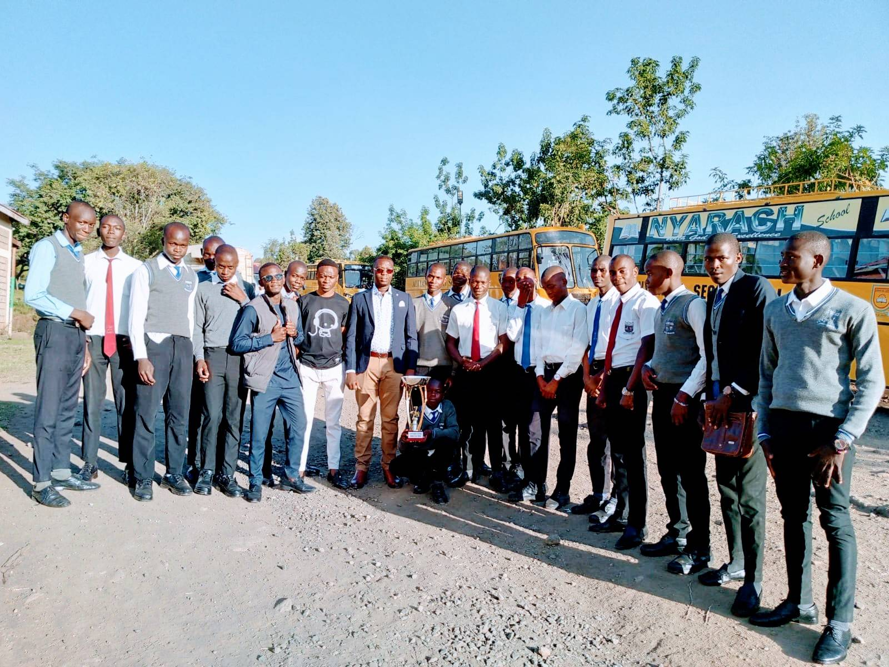
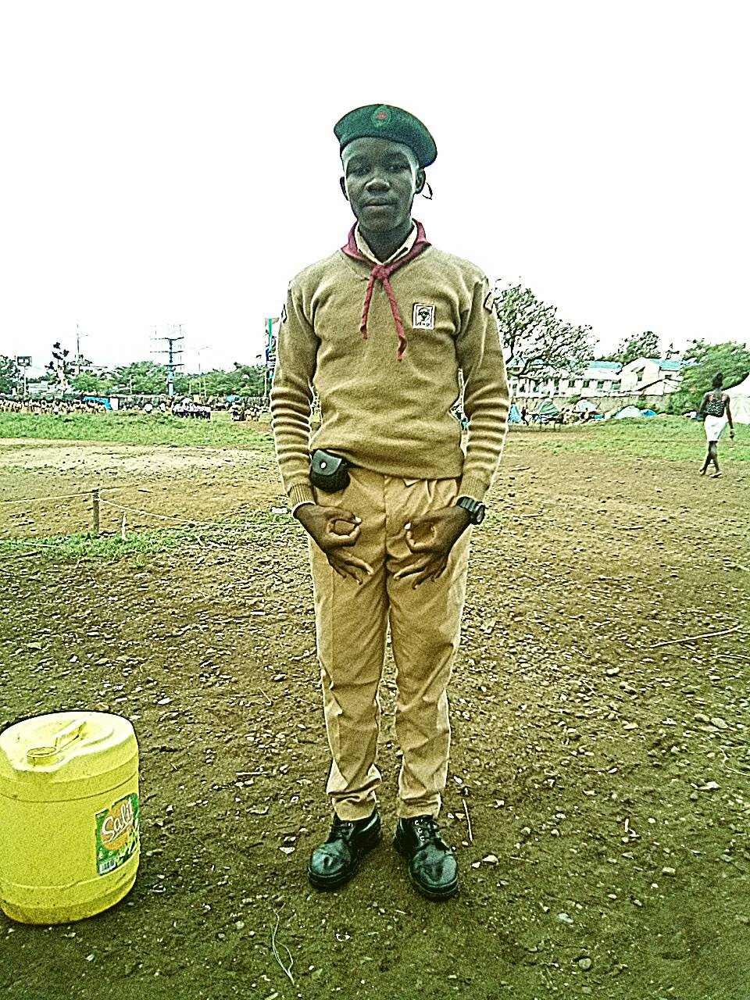
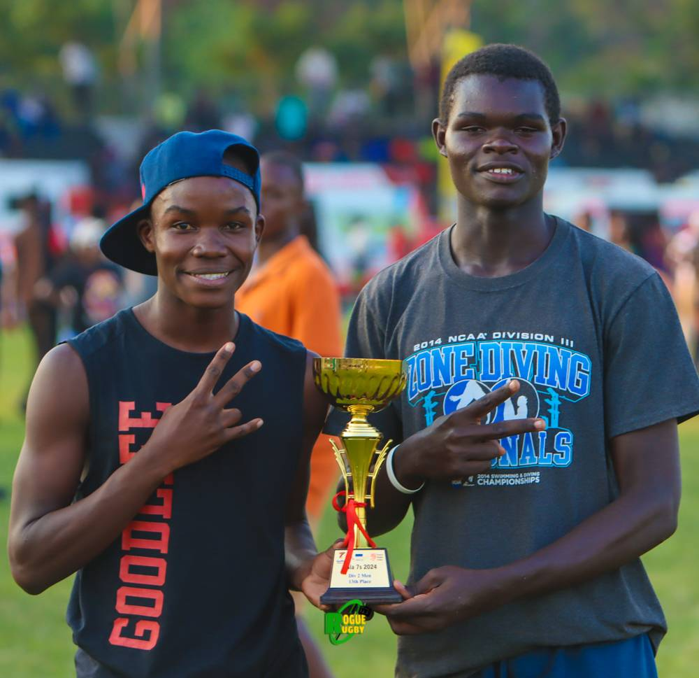

Oresi,a kenyan cittizen born in the 16-Dec-2006 in the city of kisumu were he grew up.
He is a youth with good self determination to build his dream .
He is also a big fun of rugby and also perticipates in this sport.
He is a God fearing young man and also full of dicipline.
Never giving up is his daily motivation,beacouse he belives that giving up is too fools and the week.
Schooling:

a picture of the whole team at nakuru
He attended school at ST.IGNATIUS LOYOLA SEC SCHOOL-MAGADI,in kisumu koyango area.
In school he was a student of endless potential making him to gain fame in veriuos fields eg;Academics
In school he prticipated in some co-cariculum activitie example;SCOUTING and MUSIC.
IN MUSIC
An audio perfomed by the team at gala festivals,,,
Him and his team lead by profesionaly trained teachers were able to reach the national level
and fullfilled there dream by becoming number one,this was under class '939j'an african western instrumental competition.
As highlited above by the picture taken at Nakuru high during the gala festivals
IN SCOUTING
As an able patrol leader he lead his troup through verious competitions.
This also made him to be known as the longest serving patrol leader in the school serving about 3 times consacativly.
In school as a patrol leader he had key determination on improving and maintaining the schoool environment.
 His picture at a camping site.
SPORTS
He likes to involve in lots of activities that are of good benefit to him.
But mostly he involves in playing rugby while boxing as a hooby.
He was able to achive a trophy for the most valuable player during a tornament as show below.
In rugby he works both hard and smart so as to achive his goals.
